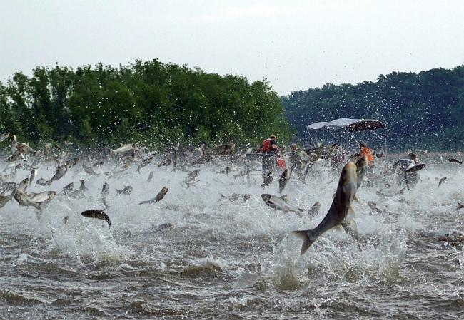
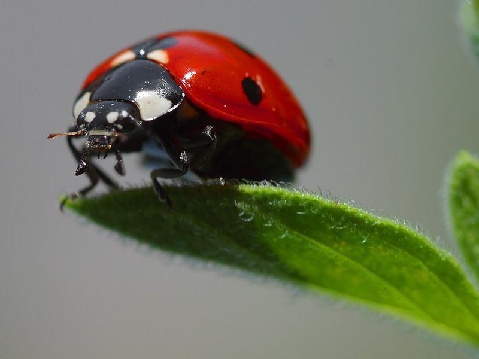
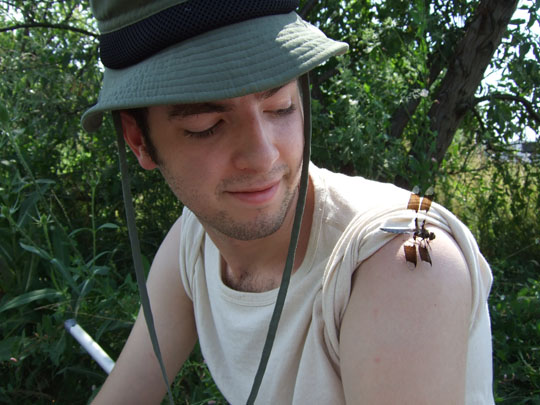
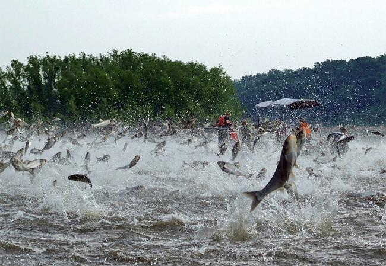
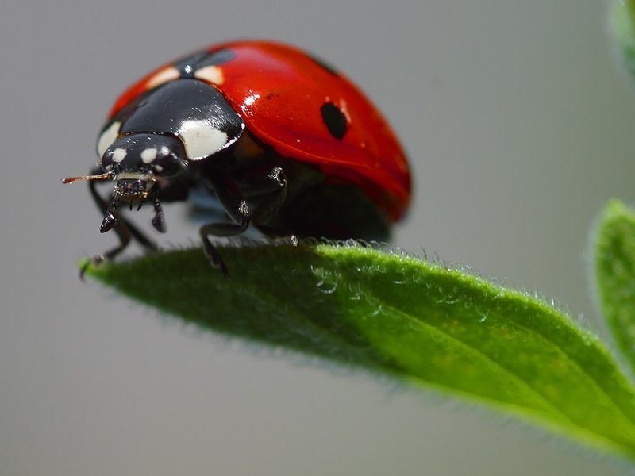
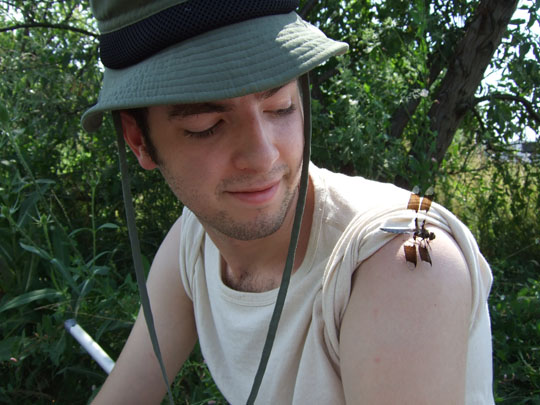

Theoretical & Population Ecology
 





What's
New
Recent Communications
Bell, L., & Cuddington, K. (2019). A burrowing ecosystem engineer positively affects its microbial prey under stressful conditions. Ecology and evolution, 9(13), 7704.
Hastings, A., Abbott, K. C., Cuddington, K., Francis, T., Gellner, G., Lai, Y. C., ... & Zeeman, M. L. (2018). Transient phenomena in ecology. Science, 361(6406), eaat6412.
Cuddington, K., Sobek-Swant, S., Crosthwaite, J.C. et al. (2018). Probability of emerald ash borer impact for Canadian cities and North America: a mechanistic model. Biol Invasions 20, 2661–2677